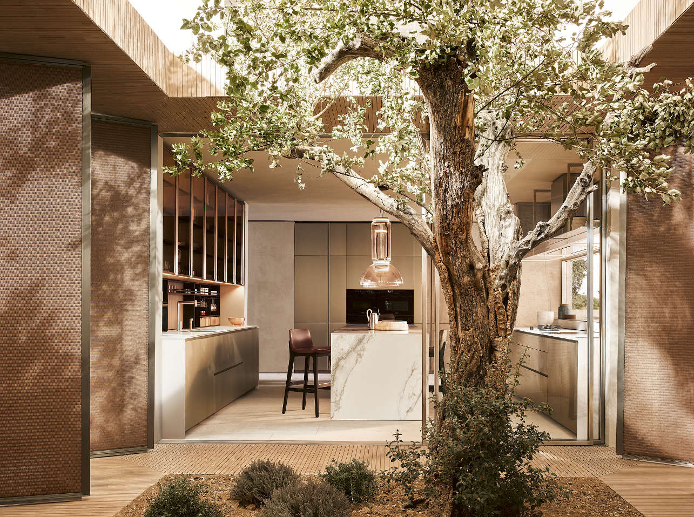
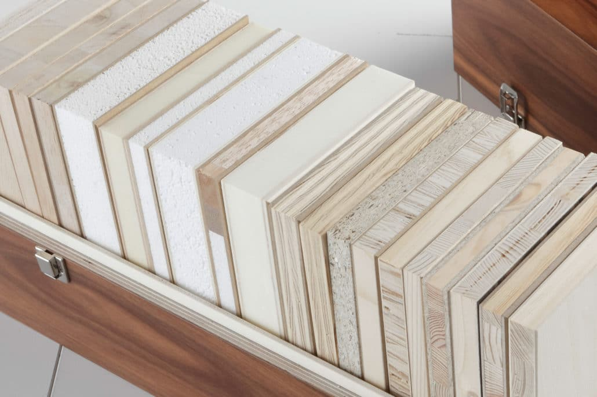

Über uns
Wir sind eine renommierte Schreinerei, die sich auf maßgefertigte Möbel spezialisiert hat. Unsere Produkte sind von höchster Qualität und werden nach den Wünschen unserer Kunden angefertigt.
Herzlich willkommen auf der Webseite der Schreinerei Nestschmied! Seit über 30 Jahren stehen wir für herausragende Handwerkskunst und maßgefertigte Möbelstücke, die sowohl in Qualität als auch im Design überzeugen. Unsere Schreinerei hat sich einen Namen gemacht, indem wir die individuellen Wünsche unserer Kunden stets in den Mittelpunkt stellen und mit höchster Präzision umsetzen.
Unsere Philosophie
Unsere Arbeit basiert auf einer tiefen Leidenschaft für Holz und seine vielfältigen Gestaltungsmöglichkeiten. Wir glauben daran, dass jedes Stück Holz eine Geschichte erzählt und sind bestrebt, diese Geschichten in einzigartigen Möbelstücken zum Leben zu erwecken. Von der sorgfältigen Auswahl der Materialien bis hin zur handwerklichen Verarbeitung – wir legen größten Wert auf jedes Detail.